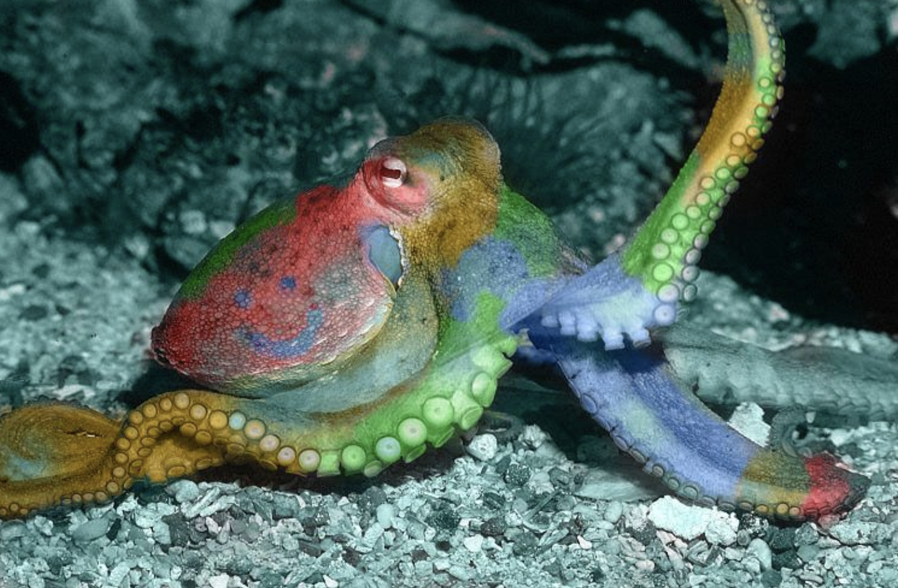
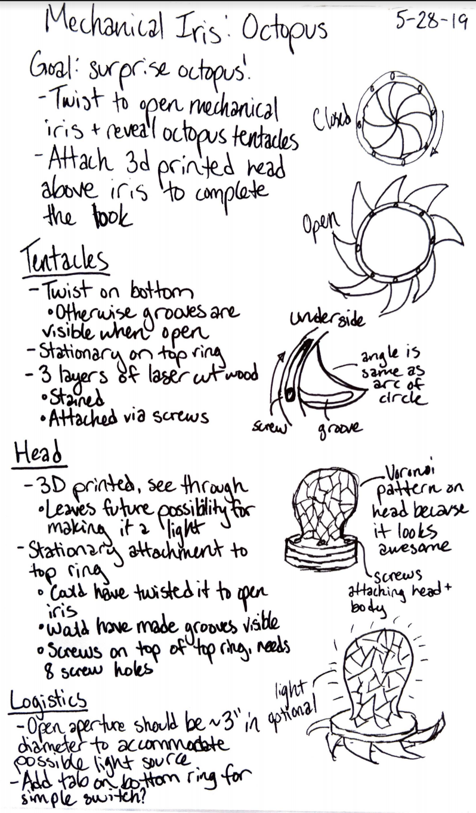

This week we had to put together a proposal for the final project. The assignment description was:
Create a proposal pitch for your final project. Your proposal can be for any digitally fabricated object. Your plan must including at least four of the techniques we learned in class e.g. casting, mechanism design, laser cutting, and grasshopper, or 3d printing, CNC milling, laser cutting, casting.
Since I've spent roughly half the quarter digitally fabricating octopodes, I decided to go in a different direction for my final project...or did I? I'll be creating a 3D printed lightbulb shape with Voronoi cutouts perched atop several laser cut wooden rings. Twisting the wooden rings will reveal (to no one's surpise)...an octopus!
The concept sketches below illustrate the various components of the octopus and how they will all work as one.
After much deliberation, I chose this concept because it would allow me to explore a complex mechanism and visual trickery. I love doing puzzles of all kinds. I thought about building a puzzle box but I would have wanted to create something far more complex and detailed than I could reasonably make within the span of a week. I also wanted to make a mechanical iris during week four but did not have enough time during that specific week. This project lets me combine that love of puzzles and hidden things with the cephalopod themes I've been exploring throughout the quarter.
The finished product will be used for decoration, both closed and open. I intend to build the octopus at a scale in which a puck light could reasonably fit underneath it and shine up through the open aperture. This is not one of my primary goals for the project and would mostly be used for display purposes. If this does not happen over the course of the project I will still count myself successful.
Mechanical irises are complicated. Here are a few useful links I will be using as references throughout the project:
This project will involve at least four of the topics we have covered in class this quarter. These are:
This project will occur over the span of a week:
| Date | Task |
|---|---|
| 5/29/19 | Present plan to class, adjust based on feedback |
| 5/30/19 | Get materials (screws, order a light on Amazon) |
| 5/31/19 | Research mechanical irises to better understand the mechanism |
| 6/1/19 | Begin digital design: create the mechanical iris in OnShape |
| 6/2/19 | Finish digital design: model the head in Rhino and tile in Grasshopper |
| 6/3/19 | Cut everything, 3D print the head |
| 6/4/19 | Re-cut anything if necessary, assemble |
| 6/5/19 | Present finished project to class |
The following materials will be used to create the surprise octopus:
| Material | Quantity | Sourcing Notes |
|---|---|---|
| 5.3mm Plywood | 1 24x18" sheet | Already available in the makerspace I will be using |
| Filament (color TBD based on availability | Less than 1 roll | Already available in the makerspace I will be using |
| 7/16" 4-40 Stainless Steel Pan Head Screws | 8 count (for top of iris) | Sourcing from Home Depot |
| 3/8" 4-40 Stainless Steel Pan Head Screws | 8 count (for underside of iris) | Sourcing from Home Depot |